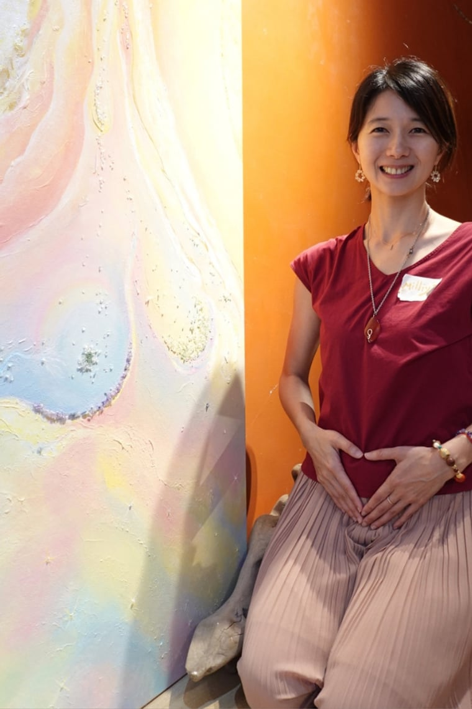
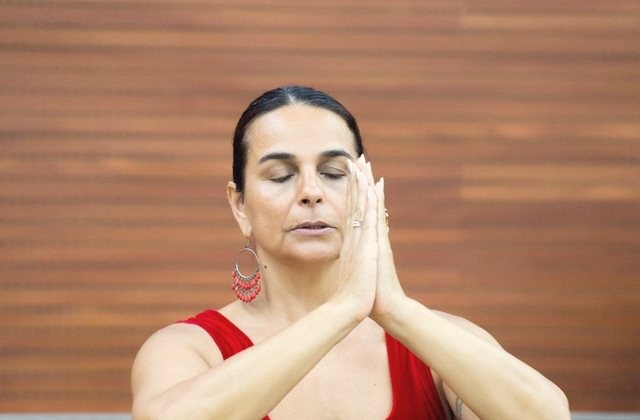
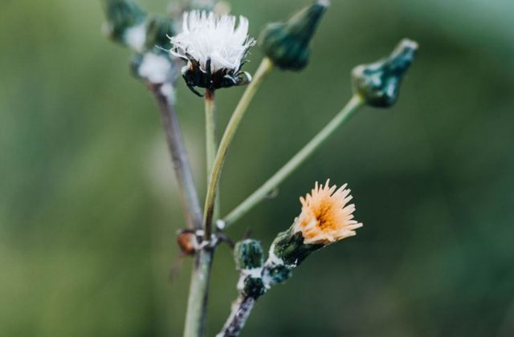

バースドゥーラ・産後ドゥーラ・産後ケア・女性のためのケア ｜ 逗子・葉山・鎌倉・神奈川
はじめまして、Milliya（ミリヤ）です。二児の母であり、ドゥーラ、そして女性の心と身体をまるごと支える伴走者です。妊娠・出産・産後の回復、そして母としての歩みに、そっと寄り添います。
まずはお話を聞かせてください
わたしについて
ドイツ・ブレーメンで第一子を、台湾の自宅で第二子を——二度の、やさしいお産を経験しました。台湾と日本の二つの土地で子育てをするなかで、「母になる」とは身体だけのことではなく、心も魂もまるごと動かされる大きな変化なのだと、何度も気づかされてきました。
自分が歩いてきたからこそ、情報だけでなく「わかってほしい」という気持ちに寄り添いたい。エビデンスに基づいた知識と、心・身体・魂を統合する視点をあわせて、あなたのペースに合わせて、静かに、まっすぐに伴走します。
— Milliya・ミリヤ
ご提供しているケア
Birth Doula
妊娠中から出産の現場まで、そばで寄り添う伴走者。呼吸・タッチ・穏やかな存在で、あなたが安心して、自分らしいお産を迎えられるように支えます。
Postpartum Doula
出産後の心と身体、そして日々の暮らしに寄り添います。お話を聴き、そっと手を添えながら、あなたが無理なく回復し、赤ちゃんとの時間を過ごせるように支えます。
Ayurveda
温めたオイルで全身を包む養生。産後はもちろん、妊活・婦人科の悩み・心身の消耗にも。神経を落ち着かせ、あなたの巡りを整えます。逗子・葉山・鎌倉・神奈川エリアで承っています。
詳しく見る →Women's care
妊娠・出産にとどまらず、人生の節目をやさしく整える時間。1対1の対話や、女性たちの集いを通して、あなた自身に還る場を。
逗子・葉山・鎌倉・神奈川エリア、オンラインでも
逗子のサロン、または逗子・葉山・鎌倉・神奈川エリアへの出張、そしてオンラインでお受けしています。「自分にはどれが合うかな」と迷ったら、今のあなたの状態を、そのままメッセージで教えてください。わたしが直接お返事します。
Instagram · @birth.with.milliya · Email · birthwithmilliya@gmail.com
新着記事

研究からわかること、唯一増えるリスク、準備すること、台湾で確認したい 16 の質問。
記事を読む →
Cochrane のレビューと WHO 2018 年の推奨、台湾で産むならなおさらの理由。
記事を読む →台湾で立ち会う方へ。無力感の正体、お産の各段階でできること、ご自身を守る方法。
記事を読む →
EmbodyBirth™ と BellydanceBirth® の創設者。お産への言葉を変えてくれた先生。
記事を読む →
健保・日本語が通じる病院・月子中心・出産後の手続きまで。
ガイドを読む →新着
健康保険の加入資格、妊婦健診、日本語が通じるところ、日台の出産文化の違い、産後ケア、新生児の手続きまで。すべて出典と確認日を明記した 2026 年 8 月時点の調査結果です。台湾に「助産所」がないことも含めて、正直にまとめました。